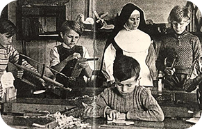

1899

Sct. Mariæ Skole blev grundlagt i 1899 i en villa på Kastetvej 11 med 8 elever. Skolen flyttede flere gange og blev i 1901 overtaget af Mariasøstrene. I 1906 overtog Sct. Josephsøstre undervisningen, og i 1909 flyttede skolen til “Damhaven” på Valdemarsgade 14 med 68 elever.